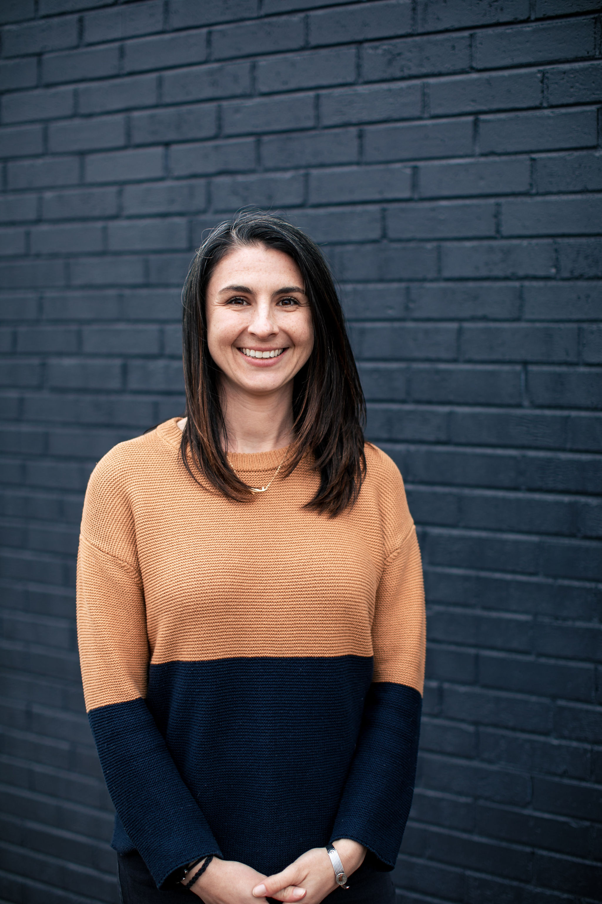

Decisions that actually get made
Which tools, which vendors, what to build and what to buy, what's safe to automate. You get clear calls with the reasoning written down, so the next round of decisions is easier instead of heavier.

AI is changing how your company builds, and most of the business is still running the way it did before. I help you find exactly where that's costing you, then make the small, specific changes that turn experiments into results, without an overhaul you can't afford to run.
AI moved faster than anyone could change the business around it. That's normal.
I start wherever AI has actually picked up speed. It's never just one group. Some teams work differently now, while planning, tracking, quality, and reporting run the way they always have. One part moved, the rest held still, and that gap is where the money sits.
Choosing an advisor to close it means small, iterative changes that add up to real transformation over time. We pick one outcome and pull it all the way through the engagement. I find where it's stuck, and we build the fix with the people you already have. Your team owns the change; I make it move faster. The business changes with the technology, and you'll see inside the engagement what improved and why.
Four different chairs, one problem. None of it is a tooling problem. AI changed one part of how work gets done, and everything around it stayed the same: how you plan, how you track, how you check the work, how you decide what's worth funding. Most companies stop right there, and that's exactly where the investment stalls. Closing that gap is the work I do, whether your teams are already moving faster or still trying to get started.
Which tools, which vendors, what to build and what to buy, what's safe to automate. You get clear calls with the reasoning written down, so the next round of decisions is easier instead of heavier.
Faster people don't automatically make a faster company. Planning, tracking, and quality have to move with them. When they do, the gains show up in what you ship and what it costs, not just in one team's day.
Guardrails that hold at the new speed, checks that fit AI-assisted work, and a clear line from what you're spending to what the business gets back. The version that holds up when someone asks hard questions.
A free one-hour call. We talk through what's actually going on: what you're spending, what's stuck, which decisions are waiting on someone. You'll leave with a clearer read even if we never work together.
I work alongside you and your team, advisory plus hands-on creation. We build the shared practices and the artifacts your people actually use, inside the flow of real work. Not a slide deck.
A new way of working your team owns, with numbers that show it moved. The point isn't my recommendations. It's your business running differently, and staying that way after I'm gone.
I've spent a decade building cloud-native products in regulated industries: banking, payments, and health insurance. Most recently I led an AI adoption program that lifted delivery throughput by roughly 30%, and restructured a key account that roughly doubled in revenue within twelve months.
I don't treat AI as an engineering problem, because I haven't only worked in engineering. I've worn a lot of hats across product, delivery, and operations, so when the way work gets built shifts, I can think through what that does to everyone around it and bring each part of the business the practices and improvements it needs.
You ask the best questions to help us see how this product should come to life.Client feedback
Thank you for surfacing and magnifying the things that really matter.Client feedback
Book a free one-hour call and we'll figure out whether there's a way I can help. Either way, you'll leave with a clearer read on your problems and goals. The method starts working in the first conversation.
Or email me directly:
erin@opensetconsulting.com